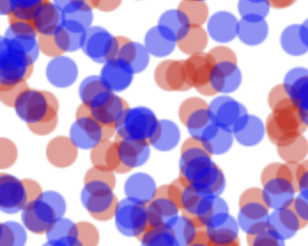
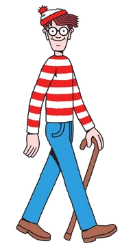
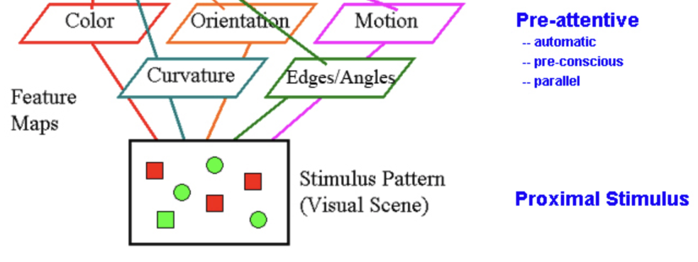
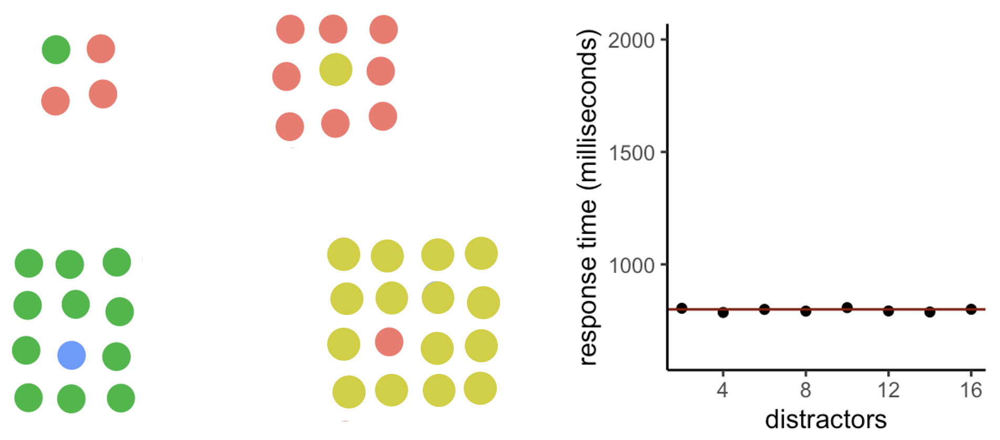
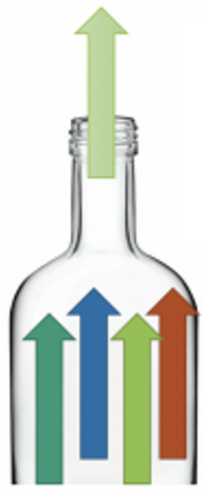
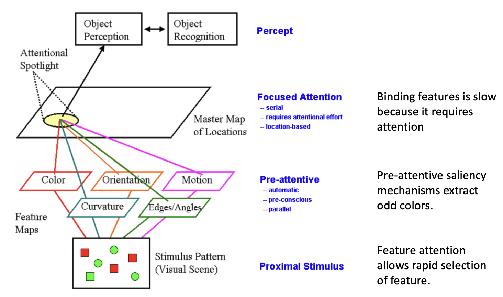
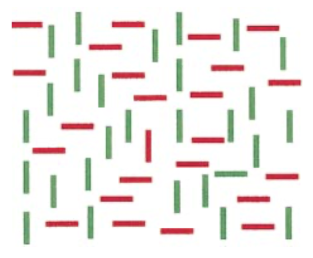
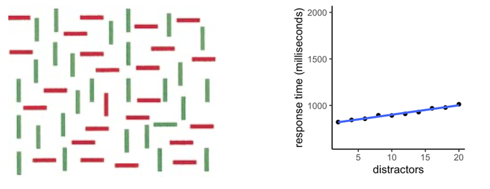

Attention Lecture 4
2026-07-09
PDF of these slides
(some of the images may not be included; I am working on fixing this)
- Distinguish the ways a stimulus can be selected
- Contrast bottom-up (salience-driven) and top-down (goal-directed) attentional control.
- Identify the types of top-down selection: spatial/location and feature selection.
- Explain why feature selection is global (Ch. 7)
- State that attending to a feature (e.g., red) enhances that feature across the entire visual field, not just a restricted region.
- Explain why you cannot simultaneously attend to red on the left and blue on the right.
- Relate global feature processing to the anatomical separation of the dorsal (“Where”) and ventral (“What”) visual pathways.
- Explain how bottom-up and top-down attention combine (Ch. 5)
- Describe how voluntary goals can supplement or override bottom-up salience signals.
- Give examples of when salience alone is insufficient and top-down attention must step in.
- Describe parallel processing of individual features (Ch. 5, 7)
- Define parallel processing as simultaneous processing across many locations in the visual field.
- Explain how a unique feature value (e.g., an oddball color or orientation) generates a salient signal that pops out, driving bottom-up attention.
- Distinguish feature dimensions (e.g., color, orientation, motion) from feature values (e.g., red, blue; leftward, downward).
- Explain why identifying feature combinations is slow (Ch. 7, 8, Tutorial)
- Contrast flat (parallel) search slopes for single-feature targets with steep (serial) slopes for conjunction targets.
- Describe why combining features requires focused attention and is capacity-limited.
- Summarise Treisman’s Feature Integration Theory (Ch. 9)
- Outline the FIT model: a pre-attentive stage that computes feature maps in parallel, followed by an attentive stage that binds features at a location.
- Explain how illusory conjunctions arise when features are incorrectly bound without focused attention.
- Apply FIT to predict whether a given visual search will be easy (parallel) or difficult (serial).
Lecture 4
- Location selection
- Feature selection
- Absence of combined selection (Ch.7), need for focused attention to combine features (Ch.9)
Top-down combines with bottom-up (Ch. 5)

Top-down combines with bottom-up (Ch. 5)
We’ll dive into:
- How top-down goals step in when salience falls short
- Details of how bottom-up salience works
Ways to select a stimulus
- Bottom-up
- Top-down
- Spatial/location selection

- Feature selection

- Spatial/location selection

Combinations of features can’t be directly selected (Ch.7)
- Features are processed somewhat separately by the brain.
- Conjoining them requires a capacity-limited process
Feature selection is global (Ch.7)
Feature selection
- Open webpage with sliders to tune to current screen
Feature selection is global (Ch.7)
- Can’t attend to red on left side while simultaneously attending to blue on right side.
- Global facilitation of attended features is obligatory

Feature selection is global
The combination of location and feature selection can’t be done.
You can either select a simple feature everywhere (e.g., red objects), or select the stimuli in a particular region, but you can’t combine those two abilities.
Global: Combining location and feature selection can’t be done

Separation of what and where pathways.
- dorsal = parietal = where = location
- ventral = temporal = what = object recognition
Why are Where and What separated?
- Object recognition (What) doesn’t need location information much
- Where is good for action, doesn’t need object identity much
Han, Z., & Sereno, A. (2023). Is it always computationally advantageous to use segregated pathways to process different visual stimulus attributes separately? Journal of Vision. https://doi.org/10.1167/jov.23.9.5020
Lecture 4a
- Processing of some features is parallel (Ch. 5, Ch. 7)
- Absence of feature pairing (Ch. 7)
- Feature integration theory (Ch. 9) (tutorial)
Parallel feature processing (Ch.5,7)
Parallel feature processing
- Visual cortex detects color difference
- Processes whole visual field simultaneously
- Oddball color signal propagates (salience)
- Drives bottom-up attention
- Two reasons the previous slide is easy
- If I tell you to look for blue, you activate blue things in your visual field
- Difference in color from the others
Next, you need to find the line that’s red and tilted to the right.
Parallel feature processing

Features
- Feature dimensions include color, motion, orientation
- Feature values: red, blue for color
- Feature values: leftward, downward for motion
Parallel processing
Odd feature values are salient

Feature processing
- Within a feature dimension, salience computation is massively parallel
- Identifying feature combinations is slow.
Identifying feature combinations is slow
Identifying feature combinations is slow
Possibly doesn’t occur unless selective attention routes the features through the bottleneck.

- Treisman’s diagram and combining features
- Individual-feature salience is computed in parallel
- Flat search slopes (parallel) vs. steep (serial)
- Combining features from two different objects takes the longest, but even within an object takes awhile (both require focused attention)
- It feels like we see everything at once
- The mysterious non-selective pathway
Feature integration theory of Treisman

- Within a feature dimension, salience computation is massively parallel
- Identifying feature combinations is slow.
Odd pair of features: serial processing
Get ready to look for the odd pair of features!

Odd feature pair: serial processing

Feature integration theory of Treisman
## {.nonincremental .smallest background-image=“images/brainBottomupTopdownTheeuwesFailing.png” background-opacity=“0.08”}
- Distinguish the ways a stimulus can be selected
- Contrast bottom-up (salience-driven) and top-down (goal-directed) attentional control.
- Identify the types of top-down selection: spatial/location and feature selection.
- Explain why feature selection is global (Ch. 7)
- State that attending to a feature (e.g., red) enhances that feature across the entire visual field, not just a restricted region.
- Explain why you cannot simultaneously attend to red on the left and blue on the right.
- Relate global feature processing to the anatomical separation of the dorsal (“Where”) and ventral (“What”) visual pathways.
- Explain how bottom-up and top-down attention combine (Ch. 5)
- Describe how voluntary goals can supplement or override bottom-up salience signals.
- Give examples of when salience alone is insufficient and top-down attention must step in.
- Describe parallel processing of individual features (Ch. 5, 7)
- Define parallel processing as simultaneous processing across many locations in the visual field.
- Explain how a unique feature value (e.g., an oddball color or orientation) generates a salient signal that pops out, driving bottom-up attention.
- Distinguish feature dimensions (e.g., color, orientation, motion) from feature values (e.g., red, blue; leftward, downward).
- Explain why identifying feature combinations is slow (Ch. 7, 8, Tutorial)
- Contrast flat (parallel) search slopes for single-feature targets with steep (serial) slopes for conjunction targets.
- Describe why combining features requires focused attention and is capacity-limited.
- Summarise Treisman’s Feature Integration Theory (Ch. 9)
- Outline the FIT model: a pre-attentive stage that computes feature maps in parallel, followed by an attentive stage that binds features at a location.
- Explain how illusory conjunctions arise when features are incorrectly bound without focused attention.
- Apply FIT to predict whether a given visual search will be easy (parallel) or difficult (serial).
4538 2627